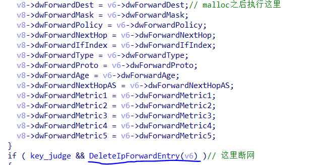
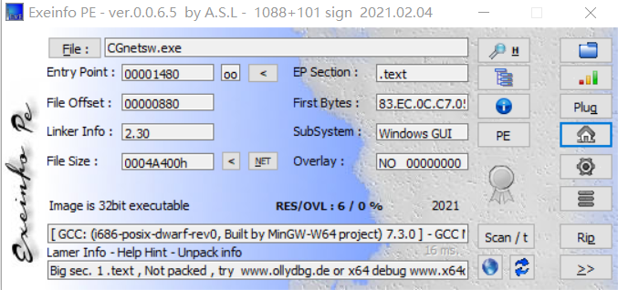
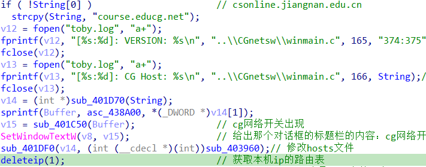
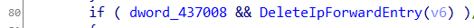
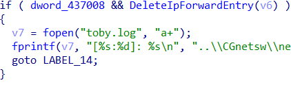
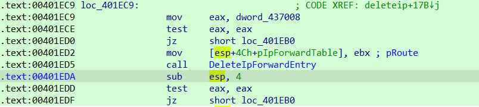
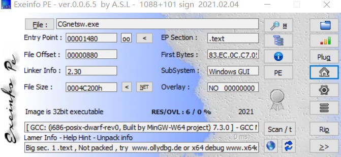
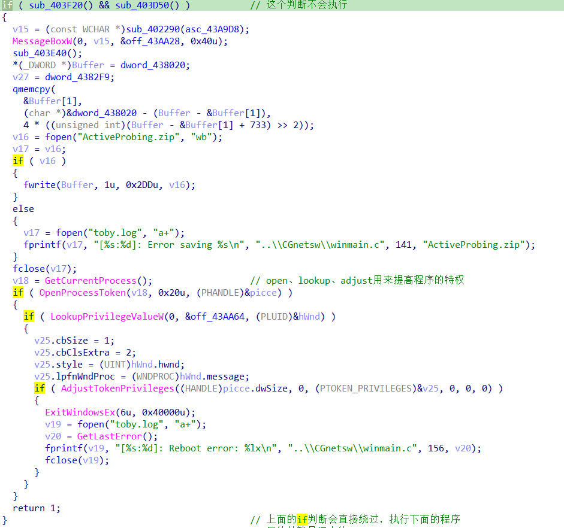
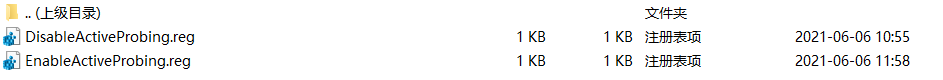
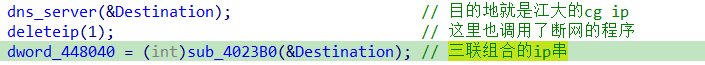

CGnetsw修改器
CGnetsw修改器
断网的原理
通过删除本机路由，并写入cg平台自己的ip于hosts文件，实现只能访问CG平台的功能。
关闭程序后，将本机路由进行恢复，实现正常上网。
程序分析
通过ida联合动调，找到断网函数的位置：

这个函数执行之后实现本机断网。
修改思路：将函数nop之后平衡堆栈，使程序正常运行
2020版
这是我遇到的第一版的断网程序

gcc编译，32位，无壳
IDA中查看winmain函数

大体分析：
首先进行一个ip地址的获取放在
String中，如果没有获取到正确的ip，那么就将CG平台的主ip进行赋值（各个学校有不同的ip地址）。然后进行日志记录（这里不是很清楚为什么记录日志）。
- v14和下面的语句实现了一个字符的拼接功能，用处不大。
- v15和
SetWindowTextW函数实现了窗口的初始化，没啥用。 - 下面对hosts表进行了修改，然后进去了
deleteip函数。
在deleteip函数中，找到删除本机路由的函数

删除路由的函数成功返回0，也就是说这里不能执行判断里面的内容

看到这里的汇编代码

eax一定为 “ 1 ” ，也就是0x401edd处的跳转实现，否则程序就会意外终止或者不能达到效果。
这里看到函数的调用规则__cdecl ，这里思路将delete函数nop掉，这样没有调用函数，esp就通过-0恢复，（我认为对程序的修改越小越好，所以就没有将sub esp , 4全nop掉）。再看到下面的test eax,eax ，若把delete函数nop之后，eax == 1 这里显然如果要跳转的话需要=0，所以这里直接将test指令修改为cmp指令，他俩指令的占字节位是一样的。
给出脚本：
这里我通过C语言直接修改文件中相对的机器码来实现
1 |
|
这样文件就可以远程欺骗CG平台，同时本地也可以上网。（经实测得到）
2021版
CG平台对程序进行了改版，临近期末，便不再深究改了哪里，直接寻找关键函数
大体分析：
依旧是32位无壳GCC编译的小程序

ida中查看，程序明显的改动是先进行修改hosts，删除路由，然后再生成窗口。
思路同上一版本相似，但是main函数中多出一个判断

这个判断经过分析实测，在win10系统中第一次运行会进行重启电脑的操作，产生的压缩包内有两个注册表文件，猜测这里应该是为了适应不同版本的功能。
压缩包内文件：

时间有点古怪，可能是我电脑运行过老程序的问题，这里不做深究。
看到下面依旧是进行dns的修改，然后删除本机路由

这里的三联ip串包括：cg平台的ip，本机的dns服务器地址，114.114.114.114（三大运营商通用dns服务器地址），三个地址通过逗号连接。
给出脚本：
进入关键函数，和2020版基本一样，这里只需要更改一下去年的偏移即可
1 |
|
虽然对程序进行了升级，但是关键地方还是老样子，没有远程验证，这个我估计以后会加上去。
总结
希望大家认真考试，不要总是想着这些歪门邪道。攻防无界